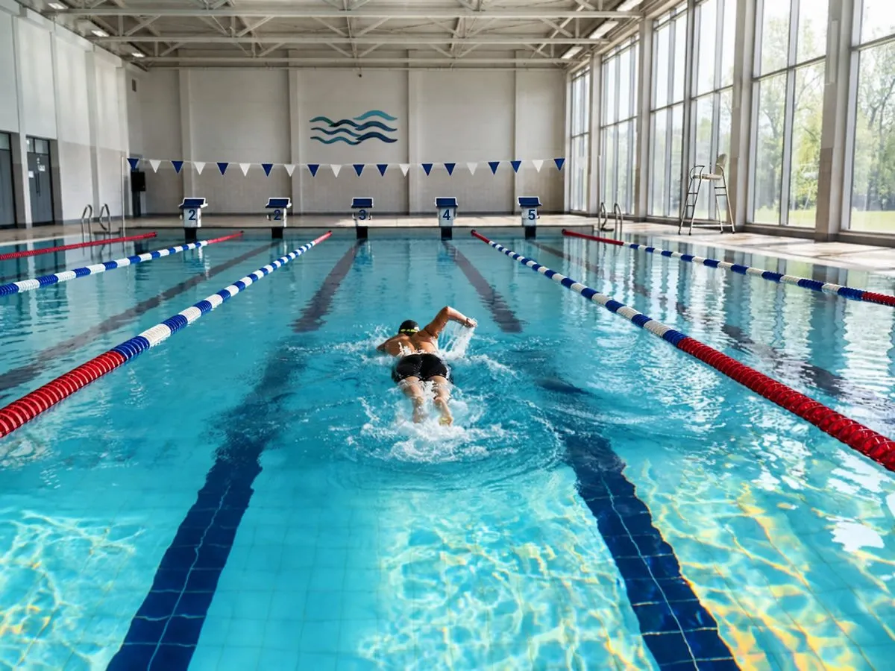

Zwembaden in Nijmegen: welk zwembad past bij jou?
Bijgewerkt op 25 november 2026.
Banen trekken, met de kinderen van de glijbaan of op een warme dag naar het buitenbad: in Nijmegen kan het allemaal. De stad heeft drie overdekte zwembaden, in West, aan de Kwakkenbergweg en in Dukenburg, een openluchtbad in het Goffertpark en thermen bij het Jonkerbos. Ze lijken op elkaar, maar elk bad is ergens anders goed in. Hier lees je welk zwembad bij je past, wat een kaartje ongeveer kost en waar je in de zomer buiten zwemt.

Zo hebben we gekozen
We lazen in november 2026 de websites van de zwembaden in onze bedrijvengids. De drie binnenbaden worden beheerd door Sportfondsen. De roosters wisselen per week en per vakantie, dus kijk voor je gaat altijd even op de site van het bad.
Overdekte zwembaden in Nijmegen
Zwembad West: Sportfondsenbad Nijmegen-West
Het grootste zwembad van de stad ligt aan de Planetenstraat 65. Er is een 50-meterbad met springplanken, een recreatiebad met glijbaan, een doelgroepenbad en een peuterbad. Sportieve zwemmers en spetterende gezinnen zitten elkaar dus niet in de weg. In de zomer is er ook een buitenbad met ligweide.
Je kunt er vrij zwemmen, banenzwemmen en op zondagochtend gezinszwemmen. Kinderen halen hier hun Zwem-ABC, en via een online volgsysteem zie je hoe ver ze zijn. Voor de allerkleinsten is er de Spartelclub, en je kunt er een kinderfeestje vieren. Een los kaartje kostte in 2026 €7, voor kinderen tot 4 jaar €6.
Goed voor: baantjes zwemmen en een middag met het gezin.
Erica Terpstrabad aan de Kwakkenbergweg
Aan de Kwakkenbergweg 25 ligt een bad met geschiedenis: Sportfondsen begon hier in 1937. Er is een wedstrijdbad met acht banen van 25 meter en een lage duikplank. Bijzonder is het doelgroepenbad met een beweegbare bodem en water van 31 graden, toegankelijk voor rolstoelgebruikers, met een tillift.
Je kunt er banenzwemmen en vrijzwemmen, en meedoen met AquaRobics, aquajogging of Senior Aqua Fit. Er zijn prikkelarme uren, baby-, peuter- en kleuterlessen, zwemles voor tieners en volwassenen en aangepast zwemmen. Veel Nijmeegse zwem-, triathlon- en duikclubs trainen hier.
Goed voor: wie in Oost of Zuid woont, en voor aangepast zwemmen.
Zwembad Dukenburg
Aan de Meijhorst 7041 kun je al vanaf zeven uur 's ochtends baantjes trekken in het 25-meterbad. Daarna is er een breed lesaanbod: zwemles voor kinderen, tienerles, les voor volwassenen en speciale lessen voor vrouwen. In het instructiebad doen senioren mee aan Senior Aqua Fit, met koffie na afloop. Er is ook een sauna.
Goed voor: vroege zwemmers en vrouwen die liever onder elkaar zwemmen.
Zwemles in Lent: Ezzy's
Bij zwemschool Ezzy's draait zwemles niet om zo snel mogelijk een diploma. Kinderen leren in hun eigen tempo, met plezier in het water. Voor de kleinsten is er PeuterSurvival en SpetterPlezier, en volwassenen doen mee aan AquaBootcamp, AquaRobics of AquaVitaal.
Goed voor: kinderen die het water nog spannend vinden.
Buitenbaden
Openluchtbad de Goffert
In het Goffertpark ligt het openluchtbad uit 1952, voor veel Nijmegenaren de plek voor een warme zomerdag. Er is een 50-meterbad, een glijbaan, een peuterbad en een grote ligweide. Het bad is alleen in de zomer open, ongeveer van mei tot begin september. De data hangen af van het jaar en soms van het weer, dus kijk in het voorjaar op de site van Sportfondsen Nijmegen.
Buitenbad Nijmegen-West
Ook Zwembad West heeft in de zomer een buitenbad met ligweide, ongeveer van eind april tot eind augustus.
Zwemmen in open water
Op warme dagen zwem je ook in de natuur. Check vooraf altijd de waterkwaliteit op zwemwater.nl, en zwem nooit in de Waal zelf: de stroming en de scheepvaart zijn levensgevaarlijk.
- Spiegelwaal (Nijmegen): een stadsstrand aan de nevengeul van de Waal, met uitzicht op de Waalbrug. Zwemmen mag binnen de zwemzones. Lees meer bij Lent.
- Bisonbaai (Ooij): een plas in de uiterwaarden van de Ooijpolder, zonder toezicht.
- De Berendonck (Wijchen): een recreatieplas met een breed, langzaam aflopend strand, een ligweide en speeltoestellen. Meer bij Wijchen.
- De Groene Heuvels (Ewijk): helder, diep water met een zandstrand en klimtoestellen.
- Mookerplas (Plasmolen): een breed zandstrand bij De Grote Siep, met horeca. Combineer het met een wandeling over de Mookerheide.
Warm water en wellness
De Thermen van Sanadome
Hier ga je niet voor baantjes, maar om op te warmen. Aan de Weg door Jonkerbos 90 zak je weg in warm water uit eigen bronnen. Er is een buitenbad en er zijn een mint- en een stoomkamer. Badkleding is er elke dag gewoon aan, dus je kunt met vrienden of je partner gaan. Kijk voor de openingstijden op de site.
Goed voor: een middag ontspannen op een koude dag.
- Thermen Berendonck (Wijchen): een wellnessresort met sauna's en baden.
- Aqua Mundo (Heijen): het subtropisch zwemparadijs van Center Parcs Het Heijderbos, met een wildwaterbaan, glijbanen en een verwarmd peuterbad.
Meer sauna's en thermen staan in onze gids sauna en wellness in Nijmegen. In de winter ga je ijsschaatsen, zie schaatsen in Nijmegen.
Tips
- Ga je met kinderen? Kies Zwembad West voor de glijbaan, of in de zomer het Goffertbad.
- Kijk vooraf naar de tijden: banen- en vrij zwemmen wisselen per dag, en in de schoolvakanties zijn de tijden vaak anders.
- Zoek je zwemles? Dat kan in alle drie de Sportfondsenbaden en bij Ezzy's in Lent.
Meer in onze gids sporten en zwemmen in Nijmegen.
Veelgestelde vragen
Welke zwembaden zijn er in Nijmegen?
Nijmegen heeft drie overdekte zwembaden: Sportfondsenbad Nijmegen-West, het Erica Terpstrabad aan de Kwakkenbergweg en Zwembad Dukenburg. In de zomer is ook openluchtbad de Goffert open. Voor warm water ga je naar de Thermen van Sanadome.
Waar ligt Zwembad West in Nijmegen?
Sportfondsenbad Nijmegen-West ligt aan de Planetenstraat 65. Het heeft een 50-meterbad, een recreatiebad met glijbaan, een peuterbad en in de zomer een buitenbad.
Wat kost zwemmen in Nijmegen?
Een los kaartje voor vrij zwemmen bij Sportfondsenbad Nijmegen-West kostte in 2026 €7, en €6 voor kinderen tot 4 jaar. De andere baden hebben eigen tarieven.
Heeft Nijmegen een 50-meterbad?
Ja, Zwembad West aan de Planetenstraat heeft een 50-meterbad, en in de zomer ook het Goffertbad.
Hoe vroeg kun je in Nijmegen baantjes zwemmen?
Zwembad Dukenburg en het Erica Terpstrabad openen voor banenzwemmers om zeven uur 's ochtends, en West op maandag ook. Kijk voor de dag zelf op het rooster.
Wanneer is het Goffertbad open?
Alleen in het zomerseizoen, ongeveer van mei tot begin september. Kijk voor de precieze data op de site van Sportfondsen Nijmegen.
Waar kun je buiten zwemmen bij Nijmegen?
In het Goffertbad, en in de natuur in de Spiegelwaal bij Lent, de Bisonbaai in de Ooijpolder, de Berendonck in Wijchen, de Groene Heuvels in Ewijk en de Mookerplas in Plasmolen. Check altijd eerst zwemwater.nl.
Is er een zwembad voor mensen met een beperking in Nijmegen?
Ja. Het Erica Terpstrabad heeft een doelgroepenbad met een beweegbare bodem, water van 31 graden en een tillift.